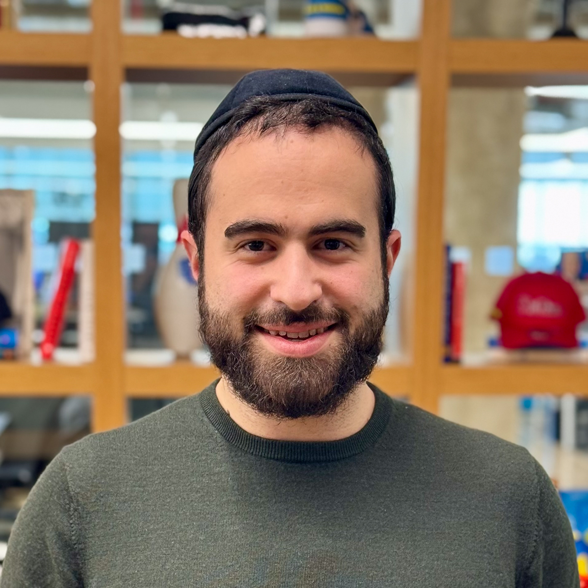

Hello, I'm Heshie Brody.
Engineering Lead by day, professional meme lord by night.
Not on the Forbes 30 under 30 (thankfully).

Fractional meme officer for hire:
I took my X (Twitter) account from 0 to 5.5 million impressions in less than 3 months using a combination of memes and satirical posts.
I've written LinkedIn posts that even the most die-hard LinkedIn fans allowed themselves to chuckle.
I'm not your typical "big 4 consultant." I provide real, actionable content that resonates with tech audiences.
Here's some of my best work: dank memes that broke the internet 🧵
Let's connect and make your company go viral.
To talk memes, feel free to schedule a call with me here.

Reach out! I'm always down for a cup of coffee ☕
Shoot me an email at 4hbrody@gmail.com.
You can connect with me on LinkedIn or Twitter.
My day job:
I'm currently a Technical Lead at Morgan and Morgan PA (America's largest personal injury law firm), where I guide the development of client web experiences (client and web portal). I manage a team of six software developers, and my duties include hiring, managing the product roadmap, and overseeing infrastructure. A giant law firm may sound boring, but think about it this way: How do you make sense of millions of calls, documents, and terabytes of client data? It takes thousands of people to run such an operation, and there are huge opportunities for automation, optimization, and adding AI to create a great web experience for a law firm of our size.
My background includes a role as a founding engineer at Capable Health, where I helped create a scalable API and infrastructure for their modern healthcare backend, including e-commerce and payment integrations. Prior to that, I worked at Sitepod—a CRM and back office solution built for the construction industry—where I contributed to their inventory, job site planning, and analytics tool. I also worked at Adar Medical Uniforms, where I developed logistics software that incorporated ERP (SAP B1) and consumer-facing tools, including a packaging robot integration that increased our warehouse employee capacity sevenfold.
I'm an alumnus of the Flatiron School's software engineering program.
I grew up in Brooklyn, New York. I discovered my passion for technology and tinkering at the age of nine by taking apart computers. I became interested in coding at age 14 when I began exploring the developer tab in Excel. I then taught myself programming using a "Visual Basic for Dummies" book.
Shameless Plugs:
- My work at Morgan & Morgan achieved a 1,600% increase in user growth and produced millions of dollars in revenue by shifting user communication from traditional phone calls to a digital platform.
- As a manager, I'm careful not to over-hire and I'm willing to forgo traditional practices when I believe a decision will benefit team focus and efficiency. For example, when I first launched our backend in my current role, I decided to host our services on Render.com instead of AWS. This choice saved both time and money by avoiding setup time and eliminating the need to keep a DevOps engineer on the team, while also providing a better development experience, exemplifying this approach.
- I did not stay stuck when I no longer felt challenged in previous jobs (including as a mortgage broker) and realized there was more to life than work that bored me. I transitioned to technology after three years in other lines of work (kudos to my awesome wife for the support).
- My post on how data is collected without consent and marketing tools taking advantage of this made the top 7 list on Dev.to and the front page of Hacker news.
- I discovered an access control vulnerability in Oracle's Opower service and was acknowledged by the company as an On-Line Presence Security Contributor as a result.
People Who Have Made a Profound Impact on My Life Personally or Professionally:
- My awesome wife who always pushes me to do my best and is never afraid to speak the truth.
- Avi Flombaum, founder and dean of Flatiron School. His Ruby On Rails courses and guidance will forever remain in my heart.
- Chaim Fried, my current CTO and the person who guided me back into tech and advised me to join a code bootcamp.
- Clark Valberg, founder of InVision and currently runs the Tiferes VC fund. Clark has helped me with some of my major career decisions and is always a listening ear away.
My favorite reads in no particular order:
- Think And Grow Rich by Napoleon Hill - Iv'e since discovered he was a fraud but nevertheless the book got my juices flowing :)
- The Almanack of Naval Ravikant: A Guide to Wealth and Happiness.
- Rework by Jason Fried and DHH.
- Ogilvy on Advertising.
- Read This If You Want to Take Great Photographs of People.
- No Rules Rules: Netflix and the Culture of Reinvention Netflix and the Culture of Reinvention.
- 1984.
- How to Win Friends and Influence People.
- American Kingpin: The Epic Hunt for the Criminal Mastermind Behind the Silk Road.
- Creative Selection: Inside Apple's Design Process During the Golden Age of Steve Jobs.
- Zero to One: Notes on Startups, or How to Build the Future.
- How to Turn Down a Billion Dollars: The Snapchat Story.
- The Big Short: Inside the Doomsday Machine.
- The Boron Letters by Gary Halbert.
- The Virgin Way: Everything I Know About Leadership.
- Be My Guest by Conrad Hilton (10/10).
- McDonald's: Behind The Arches.
- Work In Progress by Michael Eisner (Disney).
- The Secret Art of Stunt Driving - All the insider tricks of driving at the edge - this seems to be out of print :(
- Outrageous Advertising That's Outrageously Successful by Bill Glazer.
- Steve Jobs by Walter Isaacson.
- Elon Musk by Walter Isaacson.
- Elon Musk: Tesla, SpaceX, and the Quest for a Fantastic Future by Ashlee Vance.
- How I Make Photographs by Joel Meyerowitz.
- Atomic Habits.
- Zero to One: Notes on Startups, or How to Build the Future.
- How to Win Friends and Influence People.
- Structures: Or Why Things Don't Fall Down by J. E. Gordon.
- The Boron Letters by Gary Halbert (Must read if you want to learn to write copy that sells).
- Alchemy by Rory Sutherland. If you want to know why consumers make the choices they do, read this book.
As an engineer, I deeply appreciate well-constructed and thoughtfully designed products. Here are some of my most notable items:
- 2002 Mazda Miata, MX-5 with a 6 speed manual.
- 1958 Minolta Autocord Export.
- 1975 Minolta SRT 201.
- 1904 Elgin Watch, meticulously restored by Frett and Co Clockworks. There's something truly magical about a piece of engineering that, even after more than 120 years, continues to mark time.